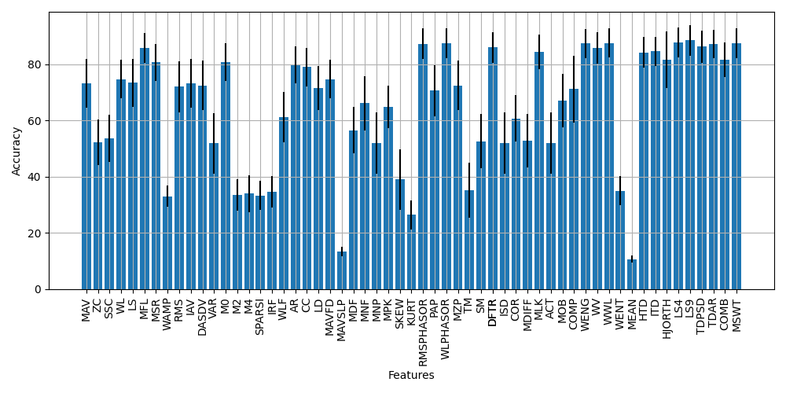

Feature Extraction
Due to the stochastic and transient nature of the EMG signal, the raw signal provides little information. As such, hand-crafted features are extracted from the underlying signal to increase its information density before being passed to the machine learning model. These features are extracted from windows (i.e., a predefined number of samples) of EMG. The selection of features (or feature sets) is essential for robust control systems.
This module aims to simplify the feature extraction stage for developers. We have included a number of features from the literature that we have robustly tested and validated. The following code snippet exemplifies how to extract features from raw EMG:
Example Code
import numpy as np
from libemg.feature_extractor import FeatureExtractor
from libemg.utils import get_windows
fe = FeatureExtractor()
# Load data from a csv file:
data = np.loadtxt("emg_data.csv", delimiter=",")
# Split the raw EMG into windows
windows = get_windows(data, 50, 25)
# Extract a list of features
feature_list = ['MAV', 'SSC', 'ZC', 'WL']
features_1 = fe.extract_features(feature_list, windows)
# Extract a predefined feature group
features_2 = fe.extract_feature_group('HTD', windows)
Note that some features have parameters that must be tuned for a particular problem and hardware implementation.
Feature Performance
Each of the ~50 features that were implemented were tested individually with a linear discriminant analysis (LDA) classifier on the 3DCdataset. Note: some of these features are designed to improve robustness to factors (i.e., power line interference, limb position effect, contraction intensity variability), and as such, don’t achieve high accuracy on their own for this gesture recognition task. Their value shouldn’t be discounted when used in a rounded feature set for real-world use. The code associated with Figure 1 can be found in the example code tab below.

Figure 1: Individual Accuracy of Each Feature on the 3DCDataset
Example Code
import os
import sys
import numpy as np
import pickle
import matplotlib.pyplot as plt
from libemg.datasets import _3DCDataset
from libemg.emg_predictor import EMGClassifier
from libemg.feature_extractor import FeatureExtractor
from libemg.utils import make_regex
from libemg.data_handler import OfflineDataHandler
from libemg.offline_metrics import OfflineMetrics
from libemg.filtering import Filter
if __name__ == "__main__":
# get the 3DC Dataset using library handle - this downloads the dataset
dataset = _3DCDataset(save_dir='example_data',
redownload=False)
# take the downloaded dataset and load it as an offlinedatahandler
odh = dataset.prepare_data(format=OfflineDataHandler)
# Perform an analysis where we test all the features available of the library individually for within-subject
# classification accuracy.
# setup out model type and output metrics
model = "LDA"
om = OfflineMetrics()
metrics = ['CA']
# get the subject list
subject_list = list(range(0,22))
# initialize our feature extractor
fe = FeatureExtractor()
feature_list = fe.get_feature_list()
# get the variable ready for where we save the results
results = np.zeros((len(feature_list), len(subject_list)))
for s in subject_list:
subject_data = odh.isolate_data("subjects",[s])
subject_train = subject_data.isolate_data("sets",[0])
subject_test = subject_data.isolate_data("sets",[1])
# apply a standardization on the raw data (x - mean)/std
filter = Filter(sampling_frequency=1000)
filter_dic = {
"name": "standardize",
"data": subject_train
}
filter.install_filters(filter_dic)
filter.filter(subject_train)
filter.filter(subject_test)
# from the standardized data, perform windowing
train_windows, train_metadata = subject_train.parse_windows(200,100)
test_windows, test_metadata = subject_test.parse_windows(200,100)
# for each feature in the feature list
for i, f in enumerate(feature_list):
train_features = fe.extract_features([f], train_windows)
test_features = fe.extract_features([f], test_windows)
# get the dataset ready for the classifier
data_set = {}
data_set['training_features'] = train_features
data_set['training_labels'] = train_metadata["classes"]
# setup the classifier
classifier = EMGClassifier(model)
classifier.fit(feature_dictionary=data_set.copy())
# running the classifier analyzes the test data we already passed it
preds,probs = classifier.run(test_features, test_metadata['classes'])
# get the CA: classification accuracy offline metric and add it to the results
results[i,s] = om.extract_offline_metrics(metrics, test_metadata['classes'], preds)[metrics[0]] * 100
print(f"S{s} {f}: {results[i,s]}%")
# the feature accuracy is represented by the mean accuracy across the subjects
mean_feature_accuracy = results.mean(axis=1)
std_feature_accuracy = results.std(axis=1)
plt.bar(feature_list, mean_feature_accuracy, yerr=std_feature_accuracy)
plt.grid()
plt.xlabel("Features")
plt.ylabel("Accuracy")
plt.show()
Features
Let \(x_{i}\) represents the signal in segment i and \(N\) denotes the number of samples in the timeseries.
Let \(fj\) be the frequency of the spectrum at frequency bin \(j\), \(P_{j}\) is the EMG power spectrum at frequency bin \(j\), and \(M\) is the length of the frequency bin.
Note: every feature and feature group is associated with an abbreviation (e.g., MAV). This is how we refer to a specific feature in our library and is how you should interface with it.
Mean Absolute Value (MAV) [1]
The average of the absolute value of the EMG signal. This is one of the most commonly used features for EMG.
\( \text{MAV} = \frac{1}{N}\sum_{i=1}^{N} |x_{i}| \)
Zero Crossings (ZC) [1]
The number of times that the amplitude of the EMG signal crosses a zero amplitude threshold.
\( \text{ZC} = \sum_{i=1}^{N-1}[\text{sgn}(x_{i} \times x_{i+1}) \cap |x_{i} - x_{i+1}| \ge \text{threshold}] \)
\( \text{sgn(}x\text{)} = \left\{\begin{array}{lr} 1, & \text{if } x \ge \text{threshold} \\ 0, & \text{otherwise } \end{array}\right\} \)
Slope Sign Change (SSC) [1]
The number of times that the slope of the EMG signal changes (i.e., the number of times that it changes between positive and negative).
\( \text{SSC} = \sum_{i=2}^{N-1}[f[(x_{i} - x_{i-1}) \times (x_{i} - x_{i+1})]] \\ \)
\( f(x) = \left\{\begin{array}{lr} 1, & \text{if } x \ge \text{threshold} \\ 0, & \text{otherwise } \end{array}\right\} \)
Waveform Length (WL) [1]
The cumulative length of the EMG waveform over the passed in window. This feature is used to measure the overall complexity of the signal (i.e., higher WL means more complex).
\( \text{WL} = \sum_{i=1}^{N-1}|x_{i+1} - x_{i}| \)
L-score (LS) [2]
A feature that uses the Legendre Shift Polynomial.
\( \text{LS} = \sum_{i=1}^{N} \text{LSP} * B \)
Maximum Fractal Length (MFL) [3]
A nonlinear information feature for the EMG waveform that is relatively invariant to contraction intensity.
\( \text{MFL} = log_{10} \sum_{i=1}^{N-1} | x_{i+1} - x_{i} | \)
Mean Squared Ratio (MSR) [4]
Determines the total amount of activity in a window.
\( \text{MSR} = \frac{1}{N}\sum_{i=1}^{N}(x_{i})^{\frac{1}{2}} \)
Willison Amplitude (WAMP) [1]
The number of times that there is a difference between amplitudes of two seperate samples exceeding a pre-defined threshold. This feature is related to the firing of motor unit action potentials and muscle contraction force.
\( \text{WAMP} = \sum_{i=1}^{N-1}[f(|x_{n}-x_{n+1})] \\ \)
\( f(x) = \left\{\begin{array}{lr} 1, & \text{if } x \ge \text{threshold} \\ 0, & \text{otherwise } \end{array}\right\} \)
Root Mean Square (RMS) [1]
Models the signal as an amplitude modulated Gaussian random process that relates to constant force and non-fatiguing contraction.
\( \text{RMS} = \sqrt{\frac{1}{N}\sum_{i=1}^{N}x_{i}^{2}} \)
Integral of Absolute Value (IAV) [1]
The integral of the absolute value. Also known as IEMG.
\( \text{IAV} = \sum_{i=i}^{N} |x_{i}| \)
Difference Absolute Standard Deviation Value (DASDV) [1]
Standard deviation of the wavelength.
\( \text{DASDV}=\sqrt{\frac{1}{N-1}\sum_{i=1}^{N-1} (x_{i+1} - x_{i})^2} \)
Variance (VAR) [5]
Calculates the variance of the data.
\( \text{VAR} = \frac{1}{N-1}\sum_{i=1}^{N} (x_{i}^{2} - \mu _x) \)
First Temporal Moment (M0) [6]
A commonly-used feature part of the TDPSD feature set.
\( \text{M0} = log(\frac{\sqrt{\sum_{i=1}^{N}x_{i}^2}^{0.1}}{0.1}) \)
Second Temporal Moment (M2) [6]
A commonly-used feature part of the TDPSD feature set.
\( \text{M2} = log(\frac{\sqrt{\sum_{i=1}^{N-1}(x_{i+1} - x_{i})^2)}^{0.1}}{0.1}) \)
Fourth Temporal Moment (M4) [6]
A commonly-used feature part of the TDPSD feature set.
\( \text{M4} = log(\frac{\sqrt{\sum_{i=1}^{N-2}(x_{i+2} + x_{i})^2)}^{0.1}}{0.1}) \)
Sparsness (SPARSI) [6]
A commonly-used feature part of the TDPSD feature set.
\( \text{SPARSI} = log( |\frac{\text{M0}}{\sqrt{ | \text{M0}-\text{M2} | }\sqrt{ | \text{M0}-\text{M4} | }} |) \)
Irregularity Factor (IRF) [6]
A commonly-used feature part of the TDPSD feature set.
\( \text{IRF} = log ( | \frac{\text{M2}}{\sqrt{ | \text{M0}*\text{M4} | }} | ) \)
Waveform Length Factor (WLR) [6]
A commonly-used feature part of the TDPSD feature set.
\( \text{WLR} = log (\sum_{i=1}^{N-1} | x_{i+1} - x_{i} | / \sum_{i=1}^{N-2} | x_{i+2} + x_{i} |) \)
Autoregressive Coefficients (AR4 and AR9) [1]
For order r, the autoregressive coefficient can be calculated by: **
\( \text{AR}_{r} = \sum_{i=1}^{N-r} x_{i+r}*x_{i} \)
Cepstral Coefficient (CC)
For order r, the cepstral coefficient can be calculated by:
\( \text{CC}_{1}= -\text{AR}_{1} \\ \)
\( \text{CC}_{r}= \sum_{i=1}^{r} \frac{r-i}{r} \text{AR}_{r} *\text{CC}_{r-2} \)
Log Detector (LD) [1]
Provides an estimate of the muscle contraction force.
\( \text{LD} = e^{\frac{1}{N}\sum_{i=1}^{N} log(|x_{i}|)} \)
Mean Absolute Value First Difference (MAVFD)
Gets the mean absolute value of the slope of the signal.
\( \text{MAVFD} = \sum_{i=1}^{N-1} \frac{x_{i+1}-x_{i}}{N-1} \)
Mean Absolute Value Slope (MAVSLP) [1]
Get the slope between p sections within a window. Here demonstrated for p=2.
\( \text{MAVSLP}_{p} = \sum_{i=\frac{N}{p} + 1}^{N} \frac{|x_{i}|}{(\frac{N}{P})} - \sum_{j=1}^{\frac{N}{p}}\frac{|x_{j}|}{(\frac{N}{P})} \)
Median Frequency (MDF) [1]
Frequency at which the EMG spectrum is divided into 2 portions with equal amplitude.
\( \text{MDF} = \frac{1}{2}\sum_{j=1}^{M}{P_{j}} \)
Mean Frequency (MNF) [1]
Computes the average frequency of the EMG spectrum.
\( \text{MNF} = (\sum_{j=1}^{M}{f_{j}P_{j}})/(\sum_{j=1}^{M}{P_{j}}) \)
Mean Power (MNP) [1]
Computes the average power of the EMG spectrum.
\( \text{MNP} = \frac{1}{M}\sum_{j=1}^{M}P_{j} \)
Maximum/Peaks (MPK) [1]
A feature that records the highest amplitude within the window:
\( \text{MPK} = max(x) \)
Skewness (SKEW) [7]
Characterizes the degree of asymmetry in the distribution of a variable.
\( \text{SKEW} = (\frac{1}{N}\sum_{i=1}^{N}(x_i-\mu)^3) / (\sqrt{(\frac{1}{N}\sum_{i=1}^{N}(x_i-\mu)^2)}) \)
Kurtosis (KURT) [7]
Indicates non-gaussianity and used to identify the peakedness of a distribution.
\( \text{KURT} = [(\frac{1}{N}\sum_{i=1}^{N}{x_{i}^4})/(\frac{1}{N}\sum_{i=1}^{N}{x_{i}^2})^2] - 3 \)
Root Mean Squared Phasor (RMSPHASOR) [12]
A feature that computes all channel-wise differences in RMS values and incorporates spatial resolution to get the predominant directions of RMS and the derivative of RMS. \(RMSi_{c}\) refers to the complex-valued spatial RMS of channel i. \(dRMSi_{c}\) refers to the same complex-valued spatial RMS computed on the derivative of the channel i signal. This feature set returns (N)(N-1)/2 RMSPHASOR features and (N)(N-1)/2 dRMSPHASOR features for a total of (N)(N-1) features for N channels.
\( \text{RMSPHASOR}_{i,j} = \text{log}(\text{norm}(RMSi_{c} - RMSj_{c})) \)
\( \text{dRMSPHASOR}_{i,j} = \text{log}(\text{norm}(dRMSi_{c} - dRMSj_{c})) \)
Waveform Length Phasor (WLPHASOR) [12]
A feature that computes all channel-wise differences in WL values and incorporates spatial resolution to get the predominant directions of WL and the derivative of WL. \(WLi_{c}\) refers to the complex-valued spatial WL of channel i. \(dWL_{c}\) refers to the same complex-valued spatial WL computed on the derivative of the channel i signal. This feature set returns (N)(N-1)/2 WLPHASOR features and (N)(N-1)/2 dWLPHASOR features for a total of (N)(N-1) features for N channels.
\( \text{WLPHASOR}_{i,j} = \text{norm}(WLi_{c} - WLj_{c}) \)
\( \text{dWLPHASOR}_{i,j} = \text{norm}(dWLi_{c} - dWLj_{c}) \)
Peak Average Power (PAP) [13]
A peak average power computation using the time domain spectral moment computation method commonly used across the TDPSD feature set. The 0th, 2nd, and 4th order moments are used to compute PAP using the following equation:
\( \text{PAP} = \frac{M0}{M4/M2} \)
Multiplication of Peaks (MZP) [13]
A spectral peak product using the time domain spectral moment computation method commonly used across the TDPSD feature set. The 2nd, and 4th order moments are used to compute PAP using the following equation:
\( \text{MZP} = \sqrt(\frac{M4}{M2}) \)
Temporal Moment (TM) [1]
A temporal moment feature computed directly from the time domain. An order parameter is passed in that scales the signal prior to computing the moments. The zeroth order moment is the windowsize, the first order moment is like the MAV, and the second order moment is like the variance;therefore the feature should be used with order > 3 (this is set as the default).
\( \text{TM} = \sum_{i=1}^{N} |x_{i}^{order}| \)
Spectral Moment (SM) [1]
A spectral moment feature computed from the frequency domain. An order parameter is passed in that scales the signal prior to computing the moments. POW is the power spectrum of the signal and f is the frequencies associated with every sample of the power spectrum.
\( \text{SM} = \sum_{i=1}^{F} pow_{i}*f_{i}^{order} \)
Sample Entropy (SAMPEN)
Sample entropy is a measure of the self-similarity within the signal. It captures nonlinear complexity information and is particularly useful for assessing contraction intensity, fatigue, or muscle tone. SAMPEN is computed using the log ratio of two “count” variables determined within the window, A and B. A represents the sum of all occurrances of each N-1 sample pattern that have distance less than r from all N-1 sample patterns. B is similar, however, it is the sum of all occurrences of each N sample patterns having a distances less than r. r is typically 0.2 * std, however, it can be changed as an argument of the library.
\( \text{SAMPEN} = -log \frac{A}{B} \)
Fuzzy Entropy (FUZZYEN)
Fuzzy entropy similarly is a measure of self-similarity within the signal; however, it uses a similarity measure (continuous A from SAMPEN) between the N samples patterns instead of counting the occurences that strictly are less than the threshold (discrete A and B from SAMPEN). The similarity is computed by:
\( \text{FUZZYEN}=e^{\frac{-A^{d}}{r}} \)
where d and r are arguments to the function that correspond to the distance order and similarity threshold, respectively.
Discrete Time Fourier Transform Representation (DFTR)
DFTR is a feature that computes the energy within 6 frequency bins of the EMG power spectrum (20-92, 92-163, 163-235, 235-307, 307-378, 378-450) Hz. If the frequency of the signal is less than these bins, then the bin is omitted (determined via a function argument).
\( \text{DFTR}_{bin} = \sum_{i \in bin} M_i \)
Integral Square Descriptor (ISD)
Integral square descriptor captures the sum of the energy of the signal.
\( \text{ISD} = \sum x_i^2 \)
Coefficient of Regularization (COR)
The coefficient of regularization captures first and second order variability of the signal is inverse proportional to the energy in the signal.
\( \text{COR} = \frac{\sum \nabla x^2}{\sum \nabla^2 x^2 * \sum x^2} \)
Mean Difference Derivative (MDIFF)
Mean difference derivative is computed by taking the sum of the first order variability of the signal.
\( \text{MDIFF} = \frac{\sum \nabla x^2}{N} \)
Mean Logarithm Kernel (MLK)
Mean logarithm kernel is the log representation of the average absolute value of the signal.
\( \text{MLK} = \frac{log \sum |x|}{N} \)
Activation (ACT)
The activation of the signal is the ISD feature normalized by the window size.
\( \text{ACT} = \frac{ISD}{N} \)
Mobility (MOB)
Extract Mobility (MOB) feature. This feature is sqrt(m2/m0), where m0 and m2 are the first and second order moments found via Parseval’s theorem. Interestingly, the Gabor frequency tells us that the number of zero crossings per unit time can be described using 1/pi * mobility.
\( \text{MOB} = \sqrt{\frac{m2}{m0}} \)
Complexity (COMP)
This feature is sqrt(m4/m2), where m2 and m4 are the second and fourth order moments found via Parseval’s theorem. It is a measure of the the similarity of the shape of a signal compared to a pure sine waveform. Because the Gabor frequency tells us the number of zero crossings per unit time, the derivative of this metric gives us the number of extrema per unit time.
\( \text{COMP} = \sqrt{\frac{m4}{m2}} \)
Wavelet Energy (WENG)
This feature is a time frequency feature that extracts the number of wavelets possible (given a sampling frequency argument), then extracts the average energy of a window per decomposition level. Given \(\phi_o\) is the decomposition for level \(o\) :
\( \text{WENG}_o = \sum \phi_o ^2 \)
Wavelet Variance (WV)
This feature is a time frequency feature that extracts the number of wavelets possible (given a sampling frequency argument), then extracts variance of the window per decomposition level. Given \(\phi_o\) is the decomposition for level \(o\) :
\( \text{WV}_o = \text{var}({\phi_o^2}) \)
Wavelet Waveform Length (WWL)
This feature is a time frequency feature that extracts the number of wavelets possible (given a sampling frequency argument), then extracts waveform length of the window per decomposition level. Given \(\phi_o\) is the decomposition for level \(o\) :
\( \text{WWL}_o = \sum{|\nabla{\phi_o ^2}|} \)
Wavelet Entropy (WENT)
This feature is a time frequency feature that extracts the number of wavelets possible (given a sampling frequency argument), then extracts the entropy of the window per decomposition level. Given \(\phi_o\) is the decomposition for level \(o\) and \(i\) indicates the sample:
\( \text{WENT}_o = \sum{x \text{log}(x)} \)
\( x = \frac{\phi_{i,o}^2}{\sum_{\forall i}{\phi_o^2}} \)
Feature Sets
Feature sets are validated groups of features that have been shown empirically to perform well for EMG-related classification tasks. The following feature sets are common groupings that are implemented in the library:
Hudgin’s Time Domain (HTD) [8]
Mean Absolute Value (MAV)
Zero Crossings (ZC)
Slope Sign Change (SSC)
Waveform Length (WL)
Time Domain Autoregressive (TDAR) [10]
Mean Absolute Value (MAV)
Zero Crossings (ZC)
Slope Sign Change (SSC)
Waveform Length (WL)
Autoregressive Coefficient 4 (AR4)
Low Sampling Frequency 4 (LS4) [2]
L-Score (LS)
Maximum Fractal Length (MFL)
Mean Squared Ratio (MSR)
Willison Amplitude (WAMP)
Low Sampling Frequency 9 (LS9) [2]
TD4 Features
Zero Crossings (ZC)
Root Mean Square (RMS)
Integral of the Absolute Value (IAV)
Absolute Square Average Difference Value (DASDV)
Variance (VAR)
Topologically Selected Time Domain (TSTD) [14]
Mean Absolute Value First Difference (MAVFD)
Difference Absolute Standard Deviation Value (DASDV)
Willison Amplitude (WAMP)
Zero Crossings (ZC)
Maximum Fractal Length (MFL)
Sample Entropy (SAMPEN)
TDPSD Features
Time Domain Power Spectral Descriptors (TDPSD) [6]
First Temporal Moment (M0)
Second Temporal Moment (M2)
Fourth Temporal Moment (M4)
Sparsness (SPARSI)
Irregularity Factor (IRF)
Waveform Length Factor (WLF)
Combined [11]
Waveform Length (WL)
Slope Sign Change (SSC)
Log Detector (LD)
Autoregressive Coefficient 9 (AR9)
Discrete Fourier Transform Representation (DFTR) [15]
Discrete Fourier Transform Representation (DFTR)
Inverse Time Domain (ITD) [16]
Integral Square Descriptor (ISD)
Coefficient of Regularization (COR)
Mean Difference Derivative (MDIFF)
Mean Logarithm Kernel (MLK)
Hjorth Parameters (HJORTH) [17]
Activation (ACT)
Mobility (MOB)
Complexity (COMP)
MultiSignal Wavelet Transform-Based Features (MSWT) [18]
Wavelet Energy (WENG)
Wavelet Variance (WV)
Wavelet Waveform Length (WWL)
Wavelet Entropy (WENT)
References
[1] Angkoon Phinyomark, Pornchai Phukpattaranont, Chusak Limsakul, Feature reduction and selection for EMG signal classification, Expert Systems with Applications, Volume 39, Issue 8, 2012, Pages 7420-7431, ISSN 0957-4174, https://doi.org/10.1016/j.eswa.2012.01.102.
[2] Phinyomark A, N Khushaba R, Scheme E. Feature Extraction and Selection for Myoelectric Control Based on Wearable EMG Sensors. Sensors (Basel). 2018 May 18;18(5):1615. doi: 10.3390/s18051615. PMID: 29783659; PMCID: PMC5982518.
[3] Angkoon Phinyomark, Franck Quaine, Sylvie Charbonnier, Christine Serviere, Franck Tarpin-Bernard, Yann Laurillau, EMG feature evaluation for improving myoelectric pattern recognition robustness, Expert Systems with Applications, Volume 40, Issue 12, 2013, Pages 4832-4840, ISSN 0957-4174, https://doi.org/10.1016/j.eswa.2013.02.023.
[4] Oluwarotimi Williams Samuel, Hui Zhou, Xiangxin Li, Hui Wang, Haoshi Zhang, Arun Kumar Sangaiah, Guanglin Li, Pattern recognition of electromyography signals based on novel time domain features for amputees’ limb motion classification, Computers & Electrical Engineering, Volume 67, 2018, Pages 646-655, ISSN 0045-7906, https://doi.org/10.1016/j.compeleceng.2017.04.003.
[5] Angkoon Phinyomark, Franck Quaine, Sylvie Charbonnier, Christine Serviere, Franck Tarpin-Bernard, Yann Laurillau, Feature extraction of the first difference of EMG time series for EMG pattern recognition, Computer Methods and Programs in Biomedicine, Volume 117, Issue 2, 2014, Pages 247-256, ISSN 0169-2607, https://doi.org/10.1016/j.cmpb.2014.06.013.
[6] Al-Timemy AH, Khushaba RN, Bugmann G, Escudero J. Improving the Performance Against Force Variation of EMG Controlled Multifunctional Upper-Limb Prostheses for Transradial Amputees. IEEE Trans Neural Syst Rehabil Eng. 2016 Jun;24(6):650-61. doi: 10.1109/TNSRE.2015.2445634. Epub 2015 Jun 23. PMID: 26111399.
[7] S. Thongpanja, A. Phinyomark, F. Quaine, Y. Laurillau, C. Limsakul and P. Phukpattaranont, “Probability Density Functions of Stationary Surface EMG Signals in Noisy Environments,” in IEEE Transactions on Instrumentation and Measurement, vol. 65, no. 7, pp. 1547-1557, July 2016, doi: 10.1109/TIM.2016.2534378.
[8] B. Hudgins, P. Parker and R. N. Scott, “A new strategy for multifunction myoelectric control,” in IEEE Transactions on Biomedical Engineering, vol. 40, no. 1, pp. 82-94, Jan. 1993, doi: 10.1109/10.204774.
[9] Campbell E, Phinyomark A, Scheme E. Current Trends and Confounding Factors in Myoelectric Control: Limb Position and Contraction Intensity. Sensors. 2020; 20(6):1613. https://doi.org/10.3390/s20061613
[10] Phinyomark A, Khushaba RN, Ibáñez-Marcelo E, Patania A, Scheme E, Petri G. Navigating features: a topologically informed chart of electromyographic features space. J R Soc Interface. 2017 Dec;14(137):20170734. doi: 10.1098/rsif.2017.0734. PMID: 29212759; PMCID: PMC5746577.
[11] Tkach, D., Huang, H. & Kuiken, T.A. Study of stability of time-domain features for electromyographic pattern recognition. J NeuroEngineering Rehabil 7, 21 (2010). https://doi.org/10.1186/1743-0003-7-2
[12] Onay, F., Mert, A. Phasor represented EMG feature extraction against varying contraction level of prosthetic control. Biomedical Signal Processing and Control 59 (2020). https://doi.org/10.1016/j.bspc.2020.101881
[13] Pancholi, S., Jain, P., Varghese, A., Joshi, A. A Novel Time-Domain based Feature for EMG-PR Prosthetic and Rehabilitation Application. 2019 41st Annual International Conference of the IEEE Engineering in Medicine and Biology Society (EMBC) (2019). https://doi.org/10.1109/EMBC.2019.8857399
[14] Phinyomark A, Khushaba RN, Ibáñez-Marcelo E, Patania A, Scheme E, Petri G. Navigating features: a topologically informed chart of electromyographic features space. J R Soc Interface. 2017 Dec;14(137):20170734. doi: 10.1098/rsif.2017.0734. PMID: 29212759; PMCID: PMC5746577.
[15] He J, Zhang D, Sheng X, Li S, Zhu X. Invariant Surface EMG Feature Against Varying Contraction Level for Myoelectric Control Based on Muscle Coordination. IEEE J Biomed Health Inform. 2015 May;19(3):874-82. doi: 10.1109/JBHI.2014.2330356. Epub 2014 Jun 30. PMID: 25014975.
[16] M. G. Asogbon Samuel et al., “Enhancing the Robustness of EMG-PR Based System against the Combined Influence of Force Variation and Subject Mobility,” 2018 3rd Asia-Pacific Conference on Intelligent Robot Systems (ACIRS), Singapore, 2018, pp. 12-17, doi: 10.1109/ACIRS.2018.8467236.
[17] Bo Hjorth, EEG analysis based on time domain properties, Electroencephalography and Clinica Neurophysiology, Volume 29, Issue 3, 1970, Pages 306-310, ISSN 0013-4694, https://doi.org/10.1016/0013-4694(70)90143-4.
[18] Rami Khushaba, https://github.com/RamiKhushaba/getmswtfeat